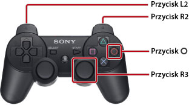

Jak korzystać z niniejszej instrukcji
Niniejsza instrukcja zawiera szczegółowe informacje dotyczące obsługi oprogramowania systemowego PS3™. Informacje na temat funkcji sprzętu i bezpieczeństwa produktu znajdują się w dokumentacji dołączonej do konsoli.
Uwagi na temat przeglądania instrukcji
Zaleca się przeglądanie niniejszej instrukcji po spełnieniu następujących warunków:
- Włączona obsługa języka JavaScript w przeglądarce. Jeśli obsługa języka JavaScript jest wyłączona w używanej przeglądarce, instrukcja może nie być wyświetlana prawidłowo lub może w ogóle nie być wyświetlana.
- Podczas przeglądania tej instrukcji na komputerze należy używać przeglądarki Microsoft Internet Explorer w wersji 6.0 lub nowszej.
Poruszanie się po instrukcji za pomocą konsoli PS3™
Podczas przeglądania instrukcji za pomocą przeglądarki internetowej  (Przeglądarka internetowa) konsoli PS3™ należy korzystać z podstawowych funkcji opisanych poniżej.
(Przeglądarka internetowa) konsoli PS3™ należy korzystać z podstawowych funkcji opisanych poniżej.
| Przyciski kierunkowe | Przenoszenie wskaźnika na łącze. |
|---|---|
Przycisk  |
Otwieranie łącza. |
| Prawy drążek | Przewijanie w dowolnym kierunku. |
| Przycisk L1 | Powrót do poprzedniej strony. |
Obraz można powiększać, używając następującej metody.

| Naciśnięcie przycisku R3 (prawy drążek) | Powiększenie obrazu. / Anulowanie powiększenia. |
|---|---|
| Przytrzymanie przycisku L2 / Przycisk R2 podczas powiększenia | Powiększanie obrazu. / Pomniejszanie obrazu. |
Przytrzymanie przycisku  podczas powiększenia podczas powiększenia |
Anulowanie powiększenia. |
Objaśnienie znaczenia przycisków w niniejszej instrukcji
Przyciski konsoli PS3™ używane do wprowadzania i anulowania elementów różnią się w zależności od regionu i produktu. Zgodnie z konwencją w wersji angielskiej oraz w innych europejskich wersjach językowych niniejszej instrukcji przycisk jest używany do wprowadzania elementów, a przycisk do anulowania elementów, natomiast w innych wersjach językowych przycisk jest używany do wprowadzania, a przycisk do anulowania.
Drukowanie instrukcji
Instrukcję można wydrukować przy użyciu komputera. Postępując zgodnie z poniższymi wskazówkami, można za jednym razem wydrukować wiele stron.
1. |
Użyj przeglądarki Microsoft Windows Internet Explorer, aby wyświetlić [Manual Index] tej instrukcji. |
|---|---|
2. |
Z menu Plik przeglądarki Internet Explorer wybierz polecenie [Drukuj]. |
3. |
Wybierz kartę [Opcje] i zaznacz pole wyboru [Drukuj wszystkie połączone dokumenty], aby wydrukować instrukcję. W zależności od drukarki strony mogą nie być drukowane w kolejności, w jakiej są wyświetlane w [Manual Index]. |